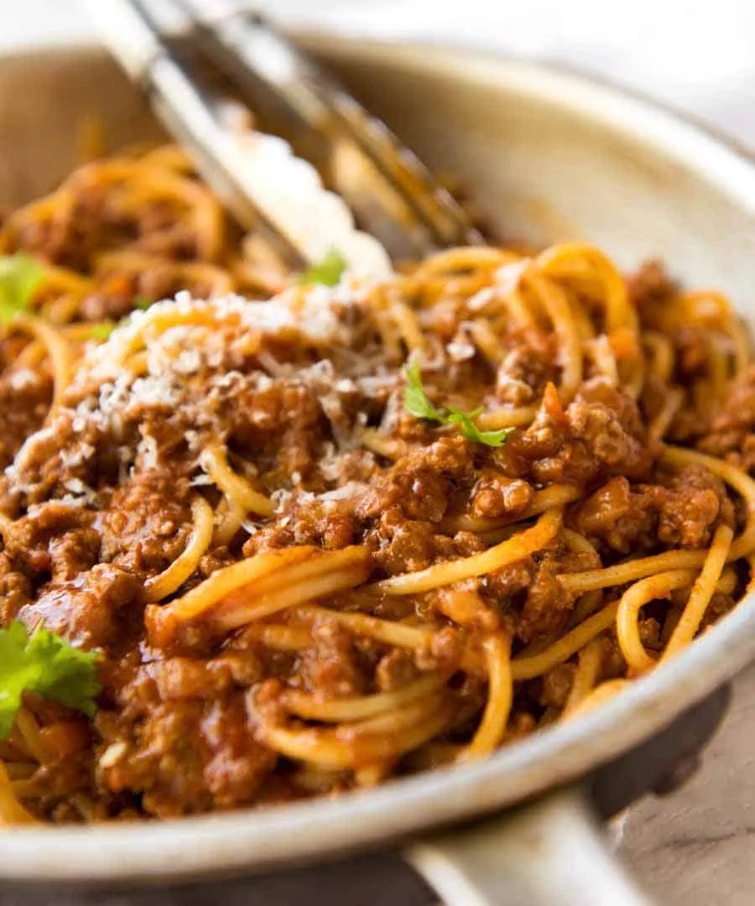

Spaghetti Bolognese

Spaghetti Bolognese is a classic Italian dish that combines the familiar elements of spaghetti with a rich, hearty
meat sauce known as "ragù alla Bolognese." While traditional spaghetti is typically served with a variety of sauces,
Bolognese sauce has its own unique characteristics that set it apart. The sauce is the star of the dish and is made
from a combination of ground meat (usually beef or pork), onions, carrots, celery, garlic, and tomatoes.
It is slow-cooked to develop deep flavors and is often enriched with red wine and milk or cream, giving it a creamy
texture.
Ingredients
- For the Bolognese Sauce:
- 1 tablespoon olive oil
- 1 onion, finely diced
- 2 carrots, finely diced
- 2 celery sticks, finely diced
- 2 cloves garlic, minced
- 500g (1 lb) minced beef
- 250g (0.5 lb) minced pork (optional, for richer flavour)
- 100g (3.5 oz) bacon, chopped (optional, for added depth)
- 1 cup red wine (e.g., Cabernet Sauvignon or Merlot)
- 3 tablespoons tomato paste
- 2 x 400g (2 x 14 oz) cans chopped tomatoes
- 1 tablespoon Worcestershire sauce
- 1 beef stock cube, crumbled
- 1 teaspoon dried oregano
- ½ teaspoon dried thyme
- ½ tablespoon light brown sugar (to balance acidity)
- Salt and black pepper to taste
- For the Pasta:
- 300g (10.5 oz) dried spaghetti or fresh pasta
- To Serve:
- Grated Parmesan cheese
- Fresh basil or parsley (optional)
Instructions
- Prepare the Vegetables:
- Heat the olive oil in a large pot or Dutch oven over medium heat. Add the diced onion, carrots, and celery.
Cook for about 5 minutes until softened.
- Add Garlic and Meat:
- Stir in the minced garlic and cook for another minute. Add the minced beef and pork (if using), along with the
chopped bacon. Cook until the meat is browned, breaking it up with a wooden spoon.
- Incorporate Tomato and Wine:
- Add the tomato paste and stir well to combine. Pour in the red wine and let it simmer for about 2-3 minutes to
reduce slightly.
- Add Tomatos and Seasonings:
- Stir in the chopped tomatoes, Worcestershire sauce, crumbled stock cube, oregano, thyme, and brown sugar.
Season with salt and pepper.
- Simmer the Sauce:
- Bring the sauce to a gentle simmer. Cover the pot and reduce the heat to low. Let it simmer for at least 90
minutes, stirring occasionally. For the best flavor, aim for 2-3 hours.
- Cook the Spaghetti:
- About 10 minutes before the sauce is ready, cook the spaghetti according to package instructions in a large
pot of salted boiling water until al dente. Drain the pasta.
- Combine and Serve:
- Serve the spaghetti topped with the bolognese sauce. Garnish with grated Parmesan cheese and fresh herbs if
desired.
Tips for Best Results
- Long Simmering Time: The longer you allow the sauce to simmer, the richer the flavors will
become. Aim for a minimum of 90 minutes.
- Quality Ingredients: Use good quality minced meat and tomatoes for the best flavor.
- Freezing: This recipe makes a large batch, perfect for freezing. Allow the sauce to cool before
storing it in airtight containers for future meals.
Enjoy your homemade Spaghetti Bolognese; a true classic that brings comfort and satisfaction to any dinner table!